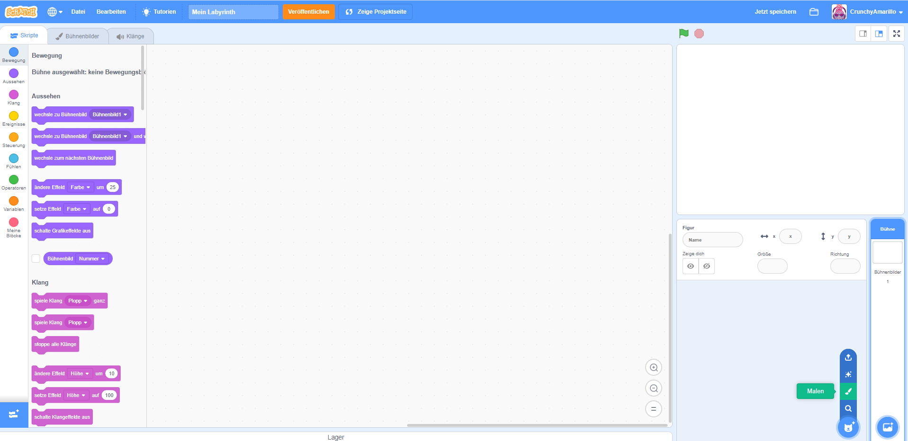
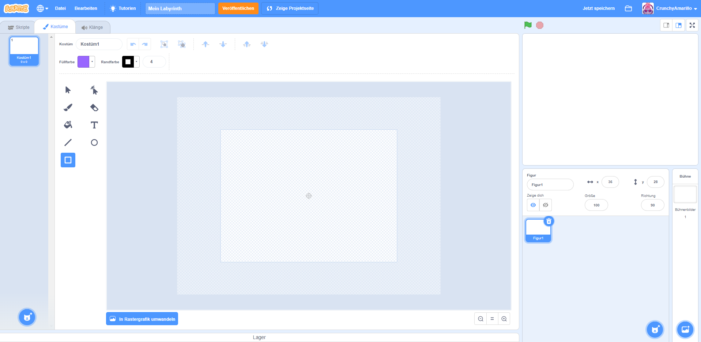
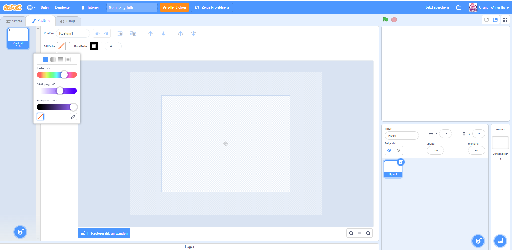
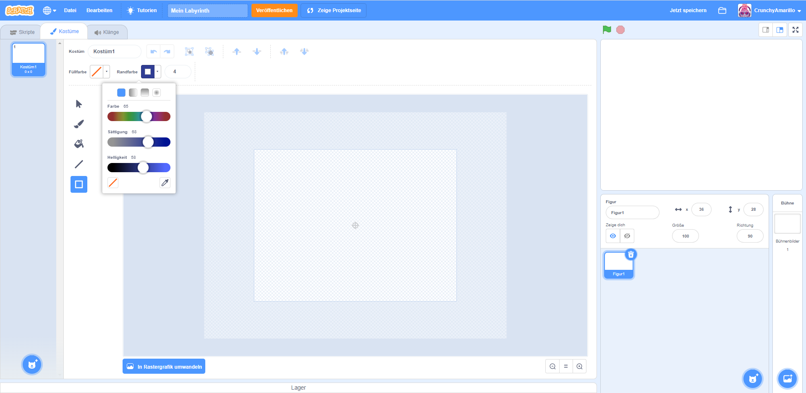
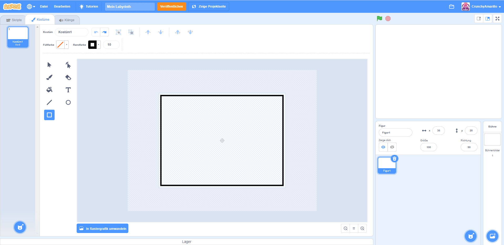
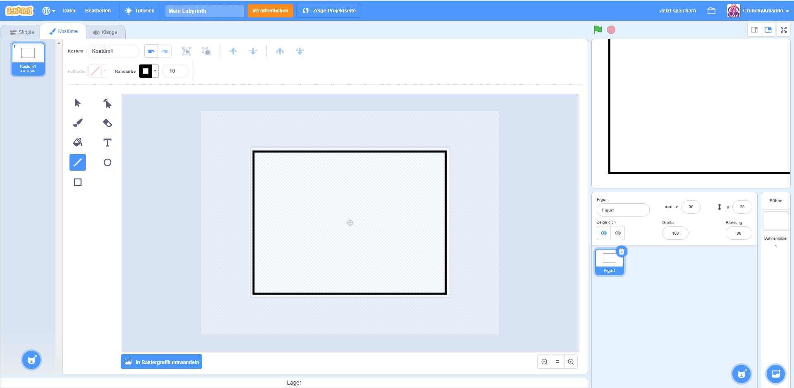
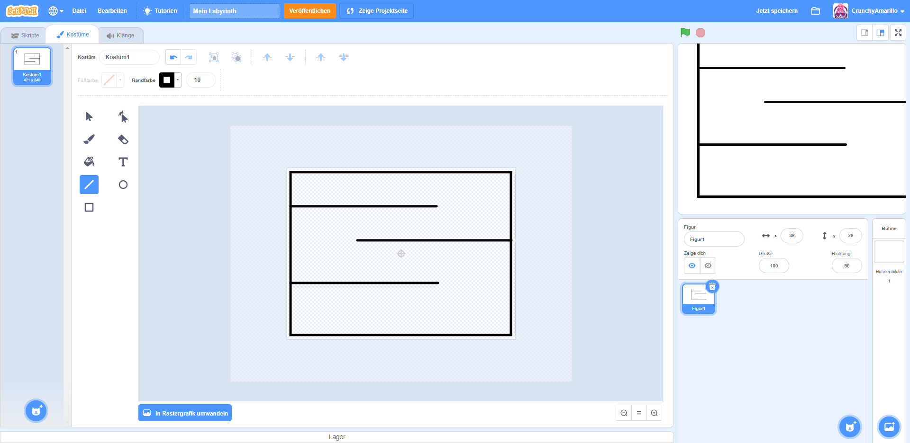

Jetzt kann es endlich losgehen: wir programmieren ein Labyrinth-Spiel. Dafür müssen wir als erstes das Labyrinth zeichnen. Dabei gehst du wie folgt vor:
1. Im Figuren-Bereich (8.) klickst du den kleinen Katzenkopf an. Es öffnet sich ein Menü. Du wählst nun den Pinsel um eine neue Figur zu malen. 
2. Du bist num im zweiten Übersichts-Tab (6.) gelandet. In der Mitte des Bildes wird dir nun eine leere Fläche angezeigt. Das ist deine Malfläche auf dieser zeichnen wir nun ein Labyrinth. Dafür malen wir zunächst ein Rechteck auf der Fläche ein. Wähle links von der Malfläche im Werkzeugbereich das Rechteck-Werkzeug (Im Bild das letzte Werkzeug, welches mit hellblau hervorgehoben ist.) 
3. Nun müssen wir die Füllfarbe des Rechtsecks ausschalten, damit nur der Rand gemalt wird. Dazu klickst du oberhalb der Malfläche die Schaltfläche "Füllfarbe" an und wählst dann im Menü, welches erscheint, das weiße Rechteck mit dem roten Schrägsstrich aus. Dieser Schritt ist sehr wichtig: ansonsten kann sich deine Figur später im Labyrinth nicht bewegen. 
4. Als nächstes kannst du über die Schalfläche Randfarbe eine beliebige Farbe für den Rand deines Labyrinths auswählen. Spiele dabei mit den Einstellungen für Farbe, Sättigung und Helligkeit rum bis du eine Farbe gefunden hast, die dir gefällt. 
5. Als letztes kannst du noch festlegen, wie dick dein Rand sein soll. Den Wert dafür stellst du im Feld rechts neben der Randfarbe ein. Je größer die Zahl die du angibst, umso breiter wird der Rand. Ein guter Wert ist zum Beispiel 10.
6. Nun sind alle Einstellungen getroffen und du kannst den Rand malen. Klicke dafür in die obere linke Ecke der Malfläche. Halte die linke Maustaste gedrücke und nun ziehe mit den Mauszeiger hinter bis zur unteren rechten Ecke der Malfläche. Jetzt lasse die linke Maustaste wieder los: Dein Rahmen wurde gemalt. Wenn es nicht so geklappt hat, wie du dir das vorgestellt hast, kannst du über den "Rückwärts"-Knopf den letzten Schritt wieder rückgängig machen und es nochmal versuchen. 
7. Jetzt fehlen deinem Labyrinth nur noch ein paar Gänge. Dafür nutzt du das Linien-Werkzeug, welches links neben der Malfläche direkt oberhalb des Rechteck-Werkzeugs zur Verfügung steht. Du hast auch bei diesem Werkzeug die Möglichkeit die Farbe und die Breite der Linie zu verändern. Teste hier aus, was dir gefällt. 
8. Nun male ein paar Gänge in dein Labyrinth. Achte aber darauf, dass diese nicht zu eng werden, damit deine Spielfigur später noch durch diese laufen kann. 